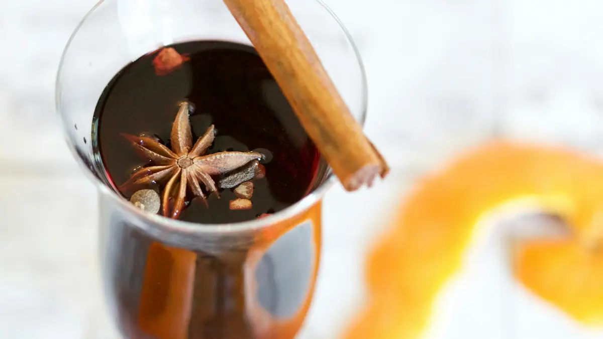

Home › Wine stories › The History of Mulled Wine: From Roman Conditum to Glühwein
The History of Mulled Wine: From Roman Conditum to Glühwein

Photo: Gaby Dyson on Unsplash
Long before Christmas markets, Romans sweetened wine with honey and pepper, medieval cooks brewed hippocras and Dickens served Smoking Bishop. Here is how mulled wine became winter's drink.
Walk through any Christmas market in December and the air smells of cloves, cinnamon and warm red wine. It feels like a modern ritual, but the idea of spicing and sweetening wine is one of the oldest habits in the history of drinking, and its route to the festive table runs through Roman kitchens, medieval apothecaries and Victorian London.
The Romans left us an actual recipe. The cookery collection that goes under the name of Apicius opens with conditum paradoxum, a 'surprise' spiced wine: honey and wine are heated together in a copper pan and skimmed, then pepper, mastic, bay or nard, saffron and roasted date stones go in before the mixture is lengthened with more light wine and clarified with charcoal. A related honey-and-pepper version was recommended for travellers. Strictly speaking this was a sweet, spiced wine rather than something served steaming, and historians suggest such wines were drunk around the Saturnalia, Rome's raucous mid-December festival.
In medieval Europe the drink took the name hippocras, usually linked to the physician Hippocrates and to the cone-shaped cloth bag apothecaries used to strain spiced wine. Spices were costly and were believed to warm and balance the body, so spiced wine sat somewhere between a luxury and a medicine. A late fourteenth-century English recipe collection, later known as The Forme of Cury, includes versions with galangal and ginger, and Chaucer's elderly knight January in The Merchant's Tale downs hippocras, clarry and vernage to fortify himself on his wedding night.
By the seventeenth century the word mulled had appeared in English, and the diarist Samuel Pepys records soothing himself with half a pint of mulled sack, a sweet Spanish wine, during a trying morning at work in March 1668. Warming wine was by then a practical comfort in cold houses as much as a festive treat.
The Victorians fixed the link with Christmas. At the end of A Christmas Carol, published in 1843, a reformed Scrooge promises Bob Cratchit a pay rise and invites him to talk it over 'over a Christmas bowl of smoking bishop', a hot punch of red wine and port scented with roasted, clove-studded Seville oranges. Across the North Sea, the German-speaking world built its own tradition of Glühwein, literally 'glow wine', a name often explained by the glowing heat used to warm it, while Scandinavia developed glögg, France vin chaud and the Alps vin brulé.
Today mulled wine is the default smell of winter, but the best versions still follow the old logic: a fruity, unoaked red such as Grenache, Merlot or a simple Rioja Joven, gentle heat and never a boil, which drives off alcohol and turns spices bitter. Add orange peel, a stick of cinnamon, a few cloves and a star anise, sweeten with honey as the Romans did, and finish with a splash of port in honour of Dickens. It is two thousand years of history in a single steaming glass.
Sources
- Apicius, De Re Coquinaria, Book I (conditum paradoxum) – LacusCurtius, University of Chicago
- A brief history of mulled wine – from health tonic to festive treat – Loughborough University
- Mulling it over – how spiced wine became the festive drink of choice – Apollo Magazine
- Down a Mug of 'Smoking Bishop' – NPR
- A Brief History of Glühwein, Germany's Favorite Christmas Drink – Culture Trip
The Wine Reference newsletter
New wines, stories and career guides, one email a week at most.
Over 18s only. Unsubscribe any time with one click. Your email is stored securely by Kit and never shared.
Support The Wine Reference
This guide is free, with no paywall. If it helped you choose a bottle, you can buy me a glass and keep it growing.
🍷 Buy me a glass